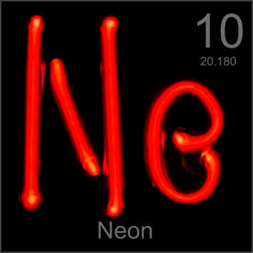

HOME
PREVIOUS
NEXT

Neon
Atomic Weight: 20.1797
Density: 0.9 g/l[note]
Melting Point: -248.59 °C
Boiling Point: -246.08 °C
Neon signs really are made with neon, like this Ne-shaped tube filled with this inert gas. A high voltage transformer sends an electric current through the tube, creating a characteristic bright neon-red arc.